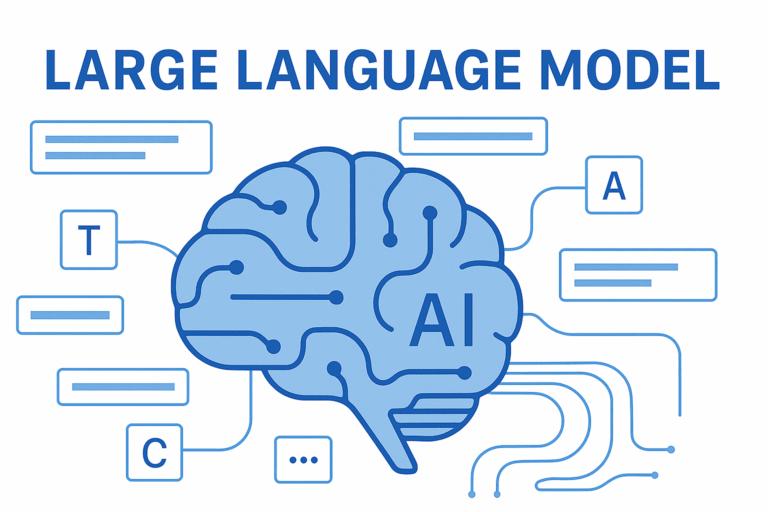

Model Explainability: SHAP and LIME

मशीन लर्निंग मॉडल्स, विशेष रूप से डीप लर्निंग, अक्सर "ब्लैक-बॉक्स" की तरह काम करते हैं। हमें यह तो पता होता है कि इनपुट क्या है और आउटपुट क्या, लेकिन यह समझना मुश्किल होता है कि मॉडल ने वह निर्णय क्यों लिया। Explainable AI (XAI) इसी पारदर्शिता की कमी को पूरा करता है।
1. LIME (Local Interpretable Model-agnostic Explanations)
LIME किसी विशेष डेटा पॉइंट के आसपास एक सरल, व्याख्या योग्य मॉडल बनाता है। यह हमें यह समझने में मदद करता है कि किसी एक विशिष्ट निर्णय के पीछे कौन से फीचर्स सबसे महत्वपूर्ण थे।
2. SHAP (SHapley Additive exPlanations)
SHAP गेम थ्योरी पर आधारित है। यह प्रत्येक फीचर को एक 'योगदान' (contribution) देता है। यह ग्लोबल और लोकल दोनों स्तरों पर यह बताने में सक्षम है कि किस फीचर ने आउटपुट को कितना प्रभावित किया।
3. यह क्यों महत्वपूर्ण है?
विनियमित उद्योगों (जैसे बैंकिंग और हेल्थकेयर) में, मॉडल के निर्णयों का स्पष्टीकरण (justification) देना कानूनी आवश्यकता है। XAI का उपयोग करके हम न केवल मॉडल की सटीकता बढ़ाते हैं, बल्कि उसमें मौजूद 'बायस' (bias) को भी पहचान सकते हैं।